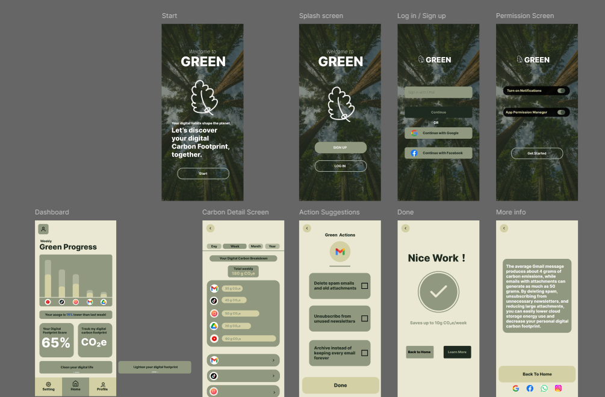

GREEN — Digital Carbon Footprint App
GREEN is a mobile prototype to help young users learn about hidden digital carbon emissions and take simple, actionable steps to reduce their footprint online.

Digital carbon footprints are often overlooked. Streaming videos, sending emails, and keeping unused apps on your phone all create hidden carbon emissions. This project focuses on designing a mobile app called GREEN.
The target users are young people aged 18–30. They spend lots of time on social media, stream videos and use emails daily, yet most of them do not realise internet and phone usage also produces carbon emissions. The design challenge is: How might we design a mobile app that helps users understand their digital carbon footprint and take simple, actionable steps to reduce it?
I completed user research, defined pain points, built low-fidelity wireframes and designed the final high-fidelity prototype in Figma. The app delivers easy, practical tips to help users build greener digital habits without complicated technical knowledge.
Live Interactive Prototype
Explore the high‑fidelity mobile prototype directly below. Tap interactive hotspots to navigate the app flow.